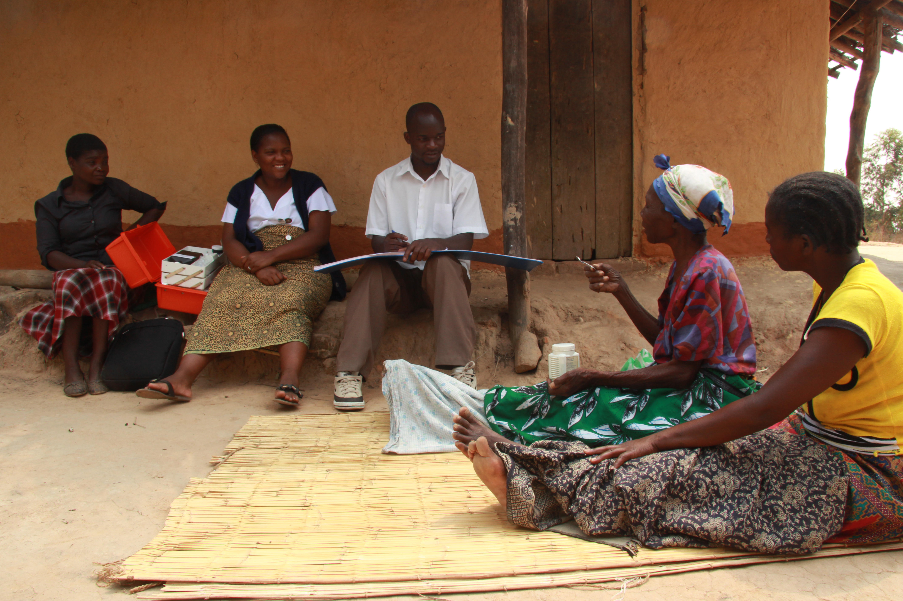
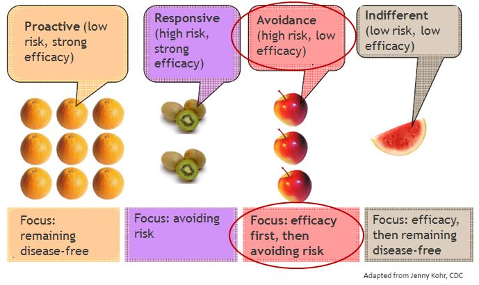
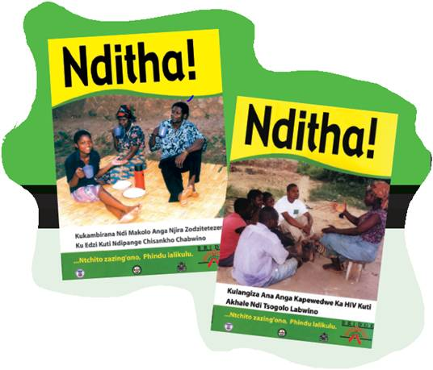
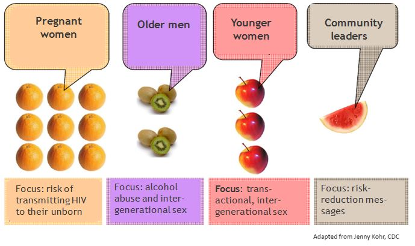

Tools Used
Initiated By
- Johns Hopkins Bloomberg School of Public Health Center for Communications Program (CCP)
Partners
- Malawi Ministry of Health
- Malawi National AIDS Commission
- Malawi Network of Service Organizations (MANSO), Public Affairs Committee
- Save the Children U.S.
- Population Services International (PSI)
- U.S. Agency of International Development (financing)
- Dozens of local and international community groups
- Local radio stations
Results
- At baseline, less than 15% of respondents reported testing for HIV. The number steadily increased throughout the campaign, rising to more than 50% by the end of the project.
- Close to 15% of those not exposed to the campaign believed that people living with HIV/AIDS should be avoided, whereas this figure was less than 5% among those with high levels of campaign exposure.
- Overall knowledge about HIV/AIDS rose from approximately 67% at baseline (2004) to approximately 78% by end-of-project (2008).
Malawi’s BRIDGE Project
BRIDGE was a 6-year behavior change HIV prevention project implemented in Malawi from 2003 to 2009 by the Johns Hopkins Bloomberg School of Public Health Center for Communication Programs (CCP), in partnership with a number of Malawi-based organizations, and with funding from USAID.
Background
At the time of the project, Malawi was one of the ten countries worldwide most affected by AIDS. The country had an HIV prevalence rate of 15% among 15-49 year olds, and AIDS was the leading cause of death among adults, with life expectancy reduced from 54 to 39 years. Over 70% of medical ward beds were occupied by patients with HIV/AIDS-related conditions. Yet only 14% of men and 5% of women reported condom use during their last sexual encounter.
To address the need for a coordinated, comprehensive, scientifically sound approach, BRIDGE coordinators developed the consensus-based National Behavior Change Intervention Strategy. Once implemented as part of a comprehensive program of prevention, services and care, this strategy was designed to contribute to a decline in new HIV infections. BRIDGE coordinators recognized the need to operationalize this strategy to link it with concrete actions.
With funding from the United States Agency of International Development (USAID), the Malawi BRIDGE project was initiated to address the growing problem of accelerating HIV infection rates in the country. BRIDGE was implemented with local partners in eight focus districts (Balaka, Chikwawa, Kasungu, Mangochi, Mulanje, Mzimba, Ntcheu, and Salima), while mass media campaigns had national reach.


The project is based on the risk perception attitude (RPA) framework (Rimal & Real, 2003), which indicates that when high risk perceptions are coupled with strong efficacy beliefs, people are motivated and able to engage in self-protective behaviors.
Setting Objectives
BRIDGE had five objectives:
- Increase the median age at first sex
- Decrease the number of unmarried youth aged 15-24 having sex in last 12 months
- Decrease the number of men reporting more than one sexual partner during the last 12 months
- Increase condom use by unmarried youth, and
- Increase condom use by adults with non-regular partners.
- The time period for meeting the objectives was the duration of the project. No specific targets were set for the changes in behavior (Tools of Change recommends setting specific targets i.e. “SMART” objectives.)
A logic model was created that illustrated the activities and interventions, initial outcomes, intermediate behavioural outcomes and, finally, sustainable outcomes. The model helped coordinators divide the program into three levels:
- National: create an enabling environment
- Community: create structures that would foster leadership and social norms, and
- Individual: foster feelings of self-efficacy, provide life skills, etc.

Initial outcome objectives at the individual level also included influencing perceived risk and stigma, and establishing a demand for the program’s services. Intermediate outcome objectives at the individual level included targeted behaviours such as sexual abstinence, partner reduction and condom use. The ultimate outcome objective was to reduce the rate of new HIV infections.
Getting Informed
A literature review suggested that several psycho-social factors were associated with people’s unwillingness to get tested for HIV. Besides gender and education, these included lack of awareness, stigma, low perceived risk and low self-efficacy.
Ten focus groups were held in two of the eight districts to investigate perceptions, beliefs, norms and practices, identify the key motivators and barriers, and determine the most credible sources and channels of information. There were 8-10 participants per group, except for the two groups with elders which had only 4-5 per group. The focus group discussions were non-directive and participatory, using self- projection images and games to generate open discussions.
The focus groups were followed up by one-on-one interviews conducted through simple random selection. The questionnaire was pre-tested, adjusted to improve clarity and flow, and then translated from English into Chichewa and Tumbuka. These two versions were then back-translated into English to establish semantic equivalence.

© 2012 Victoria A Smith, Courtesy of Photoshare
Additional information came from the 2004 Malawi Demographic and Health Survey (MDHS), which found that awareness of how to prevent HIV was high. The survey found that 85% of women and 92% of men knew at least two of the major ways to avoid HIV infection, with the most commonly cited responses being reducing the number of partners and using condoms.
However, adoption of self-protective behaviours had not kept pace. For example, in the same MDHS, 10% of married men responded that they had engaged in extramarital sex in the last 12 months, and approximately 25% of non-married men had had multiple partners during the same time period. Only 14% of men and 5% of women reported condom use during their last sexual encounter.
Barriers
Focus group participants felt helpless in the face of poverty and HIV while recognizing the impact that HIV had on their community in terms of lost adults who could work and care for children and the elderly.
Participants expressed pessimism about the effectiveness of condom use and were fearful about HIV testing. Fears about HIV testing included feelings that a positive result would invoke, such as depression, suicidal tendencies, anxiety and reactions from others, including insults, teasing, and isolation. Perceptions of stigma were also high.
Delivering the Program
Campaign Phasing and Targeting the Audience
The general population was first broken into four groups based on two factors: perceived risk and self-efficacy. The avoidance group, illustrated in the graphic below by the apples, was large. This indicated a very real danger that the program would be unsuccessful if it could not first increase self-efficacy. Otherwise, as predicted by the Risk Perception Attitude (RPA) framework that is derived from Bandura’s social–cognitive theory, many people might have simply ignored the program messages rather than taking action, and might have become further stigmatized and marginalized.

The goal of the first phase of the campaign was therefore to reinforce feelings of confidence and self-efficacy among Malawians in their ability to prevent HIV & AIDS. The campaign slogan, Nditha! means “I can do it!” in Chichewa. The campaign highlighted the many “small do-able” actions that people could take right away to build their sense of efficacy and foster an environment of openness and support that would lead to greater adherence to the “ABCs.” These small do-able actions included discussing HIV with family members; supporting friends to avoid risky situations; and having community leaders speak out openly about HIV and the ABC approach.

The formative research conducted by BRIDGE showed that men perceived their HIV risk to be lower, were more likely to have multiple partners, typically had more control in relationships, and were highly susceptible to social norms that placed them at a higher risk of exposure to HIV. As a result, the second phase of the Nditha! campaign focused specifically on men, building their capacity to protect themselves, their partners and families. (Overcoming specific barriers)
Once the levels of self-efficacy had been sufficiently increased, the campaign could then focus more strongly on risk reduction. The formative research had identified several key audiences at particularly high risk who could have a strong impact on the future of the epidemic if their behaviors changed. The project’s third phase targeted these specific audiences with messages to help them assess their specific risk factors and develop plans to minimize them.
These audiences and messages included:
- Pregnant women, and the risk of transmitting HIV to their unborn children
- Older men, and the risks associated with HIV transmission through alcohol abuse and intergenerational sex
- Younger women, and the risks from engaging in transactional or intergenerational sex, and
- Community leaders, and messages to help them influence members of these high risk groups

The scratch card shown below was one of the tools used to help people assess their risk. Each line contained a question about a risky behavior. You could scratch off the circle covering the answer, yes or no, revealing a thumb up or a thumb down. Any thumb down indicated a risky behavior, and the back of the card contained suggestions of actions you could take to minimize the risk. 90,000 of these cards were printed to be distributed at community events and through local NGO partners of the BRIDGE Project.

Campaigns
Tisankhenji ("The choice is mine") Radio Program
The Tisankhenji radio program targeted pre-adolescent girls (10-14) and aimed to instill self-confidence and self-efficacy and to promote resilience in making decisions about their health and future. The program promoted small, do-able actions that young girls could take to prevent HIV.
Each 30-minute program included two 15-minute drama and discussion segments. Each story centred on how a young girl overcame life's challenges and achieved her future goals. (Mass media; Overcoming specific barriers; Vivid personalized communication; Norm appeals)
Regular listeners formed "Listeners Clubs" where young girls talked about the issues and shared their stories; these clubs also helped to make the clubs popular with boys. Parents also began listening to the weekly episodes and used them as a starting point to talk to their children about their health and their future. (Peer support groups, Word of mouth)
Hope Kit
The Hope Kit assisted community organizations in conducting local outreach and mobilization by providing a package of ready-to-use discussions, activities and demonstrations that modeled prevention behaviours, challenged myths and assumptions about HIV transmission, and provided an opportunity for frank discussion to address stigma and discrimination.
The kit promoted open discussion about sexual behaviour and issues related to HIV/AIDS, using an interactive and fun approach that actively engaged people. Activities included The Bridges, which helped people understand how prevention options could be applied to their own lives; the Future Island, which enabled people to set goals and ensure HIV would not prevent them from reaching those goals; and the Positive Living Cards, which allowed people to confront stigma. All of these activities gave participants the skills to enable them to make informed, positive health choices.
Supplementary kit updates were also produced. In Phase II, for example, the Bambo Wachitsanzo ("Great Guy") Hope Kit Update encouraged Malawian men to take responsibility for and invest in their families by practicing mutual faithfulness to prevent HIV. The program presented positive yet realistic role models and actions for men to emulate, while encouraging men to spend more time with their wives and children, learn about HIV, and get tested. (Overcoming specific barriers)
BRIDGE also developed the Have a Healthy Baby PMTCT Hope Kit Update Supplement, which highlighted actions that women and couples could take to prevent passing HIV on to their unborn child.
Radio Diaries

The Radio Diaries helped people overcome some of the stigma that prevented them from getting an HIV test, or discussing HIV prevention with their partners. (Mass media; Overcoming Specific Barriers)
The Radio Diaries featured a variety of voices of men and women, from different socioeconomic, religious and age groups. The diarists were people who knew their status and were willing and able to talk about their situations honestly, openly and with genuine emotion. (Norm appeals; Vivid, credible communication)
Each week, diarists focused on one issue or key event in their lives. Over time, different topics of everyday life were covered: relationships with partners, family, friends and the community at large; medical issues and perceptions of response from health care providers (prejudice, support, etc); work and leisure activities; diminished capacity; emotional stress; and coming to terms with the realities of a terminal condition.
The Radio Dairies were broadcast on eight stations throughout the country, either on its own or as part of an existing HIV/AIDS-related program. The diversity of radio stations, (government, commercial and religious) enabled the program to reach a broad cross section of the population.
Nditha! Sports
Nditha! Sports was first piloted in the Mzimba district. Based on the overwhelmingly positive results, BRIDGE scaled up the activity to the remaining seven districts.
Nditha! Sports integrated HIV prevention themes into constructive recreational activities, including sports and traditional games for youth. The program encouraged positive mentoring of young adults by the community, built youth leadership skills by encouraging decision making, and empowered and validated youth involvement in community activities. It also encouraged young adults to set goals and place value on their lives, building their sense of self-esteem and self-efficacy. (Peer support groups; Neighbourhood coaches and block leaders)
Nditha! Sports was implemented at school and community settings through active collaboration with local government departments, NGOs, faith-based organizations, school authorities and youth clubs. Beyond the training aspect, BRIDGE also provided sports materials and activity guides for the Nditha! Sports program. (School Programs that Influence the Home; Vivid, credible communication)
Girls' Leadership Congress
BRIDGE developed the idea of youth and girls congresses with the goal of building youth skills in HIV prevention and implementing behaviour change activities, in addition to sharing best practices to strengthen self-efficacy and leadership skills among Malawian youth.
Held at the national level, the first Youth Congress in 2004 brought together those aged 15-25 throughout Malawi. Following the success of the National Youth Congress, BRIDGE and its partners implemented a series of regional congresses in all three regions of Malawi, followed by congresses in all eight districts. The congresses were designed to specifically address the unique social, cultural, and biological challenges faced by Malawian young women and girls that render them particularly vulnerable to HIV. (Norm appeals)
Agogo Training
Agogos ("grandmothers") are traditional counselors and youth mentors. However, BRIDGE found that many of their teachings were putting young girls at increased risk of HIV infection. Agogos were trained to continue carrying out their important role by passing on advice that would help young people avoid HIV.
Workshops equipped older women with HIV/AIDS knowledge and behavior change skills to enable them to effectively discuss the issues with their children, grandchildren and young family members, as well as others in the larger community. (Overcoming specific barriers; Neighborhood coaches/block leaders; Word of Mouth)
Partnerships
Collaborating partners included the Malawi Ministry of Health, the Johns Hopkins Bloomberg School of Public Health Center for Communications Program, Save the Children U.S., and the U.S. Agency of International Development (financing).
Local and international partners included:
- Malawi Network of AIDS Service Organizations, Public Affairs Committee
- Population Services International
- National Youth Council of Malawi
- Top Advertising Inc.
- Galaxy Media
- Business Eye and Creative Communications
- Nanzikambe Art Theatre
- Malawi Girl Guides Association
- National Association of People Living with HIV and AIDS in Malawi
- Malawi Network of People Living with HIV and AIDS
- Zodiac Radio
- Power 101
- Radio Maria
- Transworld Radio
- Capital FM
- Joy Radio
- Malawi Broadcasting Corporation and
- Radio Islam
Financing the Program
Financing was provided by the United States Agency of International Development.
Measuring Achievements
The major method used to gauge the effectiveness of the BRIDGE program involved a series of household surveys, using carefully matched non-intervention groups for comparison.
All eight districts were surveyed at baseline and at the end of the project. However, during the two midterm surveys, only four of the districts were surveyed.
The survey design comprised a series of cross-sectional data waves, with participants selected at random during each wave. Across all the data waves, sampling procedures and survey methods were kept as similar as possible in order to make them comparable with each other.
One significant difference in the design at baseline, as compared to subsequent waves, was that, at subsequent waves, sampling was stratified according to high-exposure areas (where the BRIDGE project operated) and low-exposure areas (where the BRIDGE did not specifically operate). Based on respondents’ exposure to BRIDGE activities and channels (communication methods), they were categorized into one of four groups:
- No exposure
- Low exposure (up to 3 channels)
- Medium exposure (up to 5 channels)
- High exposure (more than 5 channels)
This enabled the program to see if people with greater exposure were affected more.
Three additional measures tracked exposure to other national and district-level campaigns. This enabled the program to estimate the portion of observed changed that were due to these other campaigns, and how much could be attributed to BRIDGE activities.
- Name recognition of organizations associated with the national campaign
- Name recognition of district-level organizations associated with the campaign(s), and
- Recognition of campaign images (i.e., posters, booklets, billboards, etc.).
The household survey measured, among other things, changes in stigma and self-efficacy. Stigma was broken down into various components and each was measured by asking survey participants how strongly they agreed or disagreed with a number of statements.
For example, survey participants were asked how strongly they agreed or disagreed when asked if people living with HIV or AIDS should be avoided, or if teachers who have AIDS should be barred from teaching. Other questions measured fear of casual contact, blame and shame, as well as how comfortable people felt speaking with their partner(s), family, friends or neighbours about condom use and HIV/AIDS.
Self-efficacy to carry out prevention behaviors was measured by asking survey participants to say how strongly they agreed or disagreed with related statements. Here are some examples:
- I am confident that I can remain faithful to my partner (that is, not have sex with anyone else)
- If I am not in a long-term relationship with someone, I am confident that I can remain abstinent.
Results
Exposure to the BRIDGE programs was generally high. The project generated trust in the communities and contributed to the “hope and openness” necessary to create and sustain an enabling environment. Risk perception was clearly enhanced from baseline to end-of-project and monumental gains were made in the areas of self-efficacy with regard to abstinence, faithfulness and condom use.
Overall knowledge about HIV/AIDS increased from about 67% at baseline to more than 77% by the end of the campaign. Those who had been exposed to BRIDGE activities had the highest increases with respect to knowledge of the issues, whereas those who were not exposed had the lowest level of knowledge.
There was a steady increase from baseline to end-of-project in people’s ability to reduce their number of sexual partners. Furthermore, across all measures involving issues of self-esteem and self-efficacy, there was evidence of a “ceiling-effect,” i.e., at a certain point, levels of efficacy were so high there was little room left for improvement.
Data showed significant improvements in HIV testing rates. At baseline, less than 15% of respondents reported testing for HIV. By the first midterm survey, that number had increased to close to 25%, to more than 35% at the second midterm, and to more than 50% at end-of-project. HIV testing in Malawi was fast becoming the norm in all BRIDGE districts. From 2003 to 2008, there was an approximately four-fold increase in the proportion of people who reported testing for HIV.
With respect to the use of condoms, ability to talk to partners about condom use and to remain faithful to one partner, there was a significant association with exposure. Again, those who were exposed to more activities and channels had higher levels of efficacy.
There was a striking decrease in stigma with exposure to BRIDGE. Whereas close to 15% of those not exposed to the campaign believed that people living with HIV/AIDS should be avoided, this figure was less than 5% among those with high levels of exposure.
BRIDGE’s research also found that other programs at the national level were having a significant impact on some measures, such as knowledge and testing rates. It accounted for this in its analysis and still found that exposure to the BRIDGE campaign was a significant and strong predictor of knowledge and testing rates.
Selected Campaign Results
Evaluation of the Tisankhenji radio program revealed that students in the treatment schools, compared to the comparison schools, were significantly more likely to have greater career aspirations, higher self-esteem, and to engage in meaningful discussions with their teachers and parents about topics relating to their future careers. They also had more discussions about their career plans with their friends, teachers and parents.
Positive outcomes were observed for both boys and girls in the treatment schools, even though the program specifically targeted girls. Qualitative studies done with girl participants revealed that they were aware of the barriers they would encounter in their pursuit of career goals, but they also had higher levels of self-efficacy to overcome them, indicating that their beliefs were based on a careful appraisal of existing hurdles.
Results indicated that participation in Hope Kit activities was associated with higher community efficacy, more favourable gender norms and a greater likelihood to use condoms. However, the analysis also found that non-participants who interacted with Hope Kit participants did not gain much knowledge despite their social ties.
The more Radio Dairies programs that audiences listened to, the more stigma was reduced (the more they felt that people living with HIV/AIDS were “just like them.”)
Participants in Nditha! Sports reported having undergone positive changes in their attitudes, beliefs and behaviours with regard to sexuality. They also demonstrated keen interest in continuing their education. After the program, participating youth were found to be more knowledgeable about issues pertaining to HIV/AIDS, especially with regard to preventing HIV infection, than when the project was first introduced.
Participants in the Girls' Leadership Congress reported having acquired critical thinking skills as a result of the program. This, in turn, helped them solve problems on their own, thereby increasing their ability to deal with the challenges of facing negative gender norms. Girls also reported that their social network had been greatly expanded after participation in the program.
Notes
Partnerships were key to success
BRIDGE worked with many public, private and civil society organizations and agencies. These partnerships were, in large part, responsible for the project’s success. The BRIDGE approach to partnership—built on a foundation of collaboration and capacity building—enabled the project to share technical expertise and best practices, while including partners in the development of tools and campaigns. This contributed to developing a concerted and effective national response to HIV/AIDS in Malawi.
Collaboration ensured local ownership
All messages, materials and tools included input from local HIV, communication, development and government partners, as well as from residents in the eight districts. This ensured that communication products were community-based, had local ownership and would be sustainable beyond the end of the project. All collaborating and interested parties were also given copies of the tools and the opportunity to participate in training on how to use them.
Capacity building
BRIDGE project staff strengthened the national response to HIV/AIDS by providing support to a number of technical working groups and building the capacity of national organizations to strengthen their behavior change strategies and interventions. BRIDGE actively participated in the National AIDS Commission's Behavior Change Intervention Technical Working Group and Youth Technical Working Group and contributed to the development of the National HIV Prevention Strategy and the National Action Framework. BRIDGE’s Leadership in Strategic Health Communication workshop trained key Malawi HIV and behavior change professionals in state-of-the-art communication and prevention approaches. Project staff also provided technical assistance to a number of other partners including I-Life, Peace Corps, and the Umoyo Network.
Low literacy rates need to be addressed
Exposure to BRIDGE programs was positively associated with education, suggesting that better-educated individuals, relative to their less-educated counterparts, derived greater benefits from the program. This suggested that future programming should take special steps to reach those not currently being served because of their low literacy levels.
Note
This case study was written in 2014 by Jay Kassirer, Sharon Boddy and Heather Bowen Ray, with funding from the Public Health Agency of Canada.